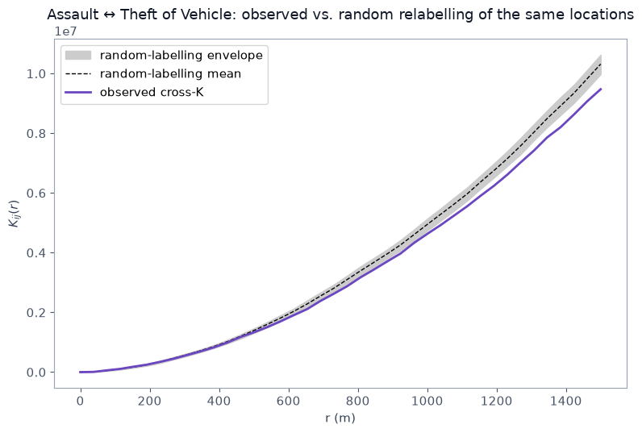

Integration with Areal Analysis, Pitfalls and Exercises
Aggregating point events to areal units as a bridge to Part 2; a consolidated review of every pitfall met in Part 1; four solved exercises. This notebook is Part 1: Point Pattern Analysis (Chapter 1.5 of 5, final chapter). The worked example uses Buffalo crime incidents, 2018, aggregated to the 35 official neighbourhood polygons (data/crime_data_2018.csv, data/buffalo_city.shp). The methods come from geolattice.spatial_statistics.pointpattern, geolattice.spatial_statistics.weights, geolattice.spatial_statistics.esda.
Overview
The first four chapters of Part 1 treated Buffalo’s crime events purely as a point pattern: intensity, interaction, formal tests, all computed directly on event locations. But point data are frequently reported, compared, and acted on at the level of administrative areas, neighbourhoods, wards, census tracts, the lattice (areal) data type that Part 2 onward is built around. This closing chapter builds that bridge, works through every pitfall accumulated across the Part with the numbers already established, and closes with four solved exercises that revisit the chapter’s methods with a critical eye.
Step
What we do
Aggregation
Count crime events within each of Buffalo’s 35 neighbourhoods
MAUP
Explain why the aggregated result depends on the areal units chosen, not just the data
Bridge to Part 2
Compute Moran’s I on the aggregated counts and on the aggregated rates: and show they disagree
CRS pitfall
Directly measure how much the wrong-CRS shapefile would have distorted a distance-based result
Pitfall review
Consolidate every data-quality lesson from Chapters 1.1-1.4 in one place
Exercises
Four solved problems: window choice, CRS impact, deduplication, and a rigorous re-test of Chapter 1.4’s cross-K finding
By the end, Part 1 is complete: you will have gone from raw event coordinates to a validated, reprojected point pattern, through intensity and interaction analysis, formal hypothesis tests, and finally an areal aggregation ready to hand off to Part 2’s spatial-weights and autocorrelation machinery.
From Points to Areas: Why Aggregate?
Sometimes the question genuinely is areal: “which neighbourhoods need more policing resources?” is a question about administrative units, not about individual coordinates. Sometimes it is a data-availability question: population, income, and other covariates a criminologist might want to control for are themselves usually only available by neighbourhood or tract, not at arbitrary points. And sometimes it is a bridge to other methods: Part 2’s spatial weights and Moran’s I, Part 3’s spatial regression, and Part 5’s disease-mapping methods all operate on exactly this kind of one-value-per-area lattice data.
The mechanics are a standard point-in-polygon join: for each event, find which polygon contains it, then count (or otherwise summarise) events by polygon: geopandas.sjoin(..., predicate="within") followed by a groupby. Doing this converts a rich, continuous-space point pattern into a much coarser, fixed-topology object: and that conversion discards information, deliberately. Everything Chapters 1.2-1.4 could say about where within a neighbourhood events concentrate is gone once you have only a neighbourhood total.
Small-area Instability and the Modifiable Areal Unit Problem
Two distinct problems come with aggregation, both worth naming precisely because Part 2 onward assumes you recognise them on sight.
Small-area instability. A count \(O_i\) in area \(i\) with expected value \(E_i\) behaves, approximately, like a Poisson random variable, with \(\text{Var}(O_i) \approx E_i\). A rate\(O_i / E_i\) therefore has variance \(\approx 1/E_i\): small areas (or areas with few expected events) produce noisy rates, capable of showing the most extreme values in the whole map for no reason beyond having few opportunities to generate a count. This is a preview of Part 5’s core problem (empirical Bayes and Bayesian smoothing of small-area rates); Section 7 shows a first, direct example of it.
The Modifiable Areal Unit Problem (MAUP). The same point data, aggregated to a different set of areal units, a different neighbourhood boundary definition, a different zoom level of census geography, can produce visibly different maps and even different statistical conclusions, purely from the choice of partition, with no change to the underlying events at all. There is no aggregation that is uniquely “correct”; the official neighbourhood boundaries used here are one reasonable choice among many, chosen because they are the administratively meaningful unit for this city, not because they are somehow the “true” scale of the process.
Locate the repository root, import the spatial-statistics helpers, and point DATA at the example files.
Installation. This notebook needs installation option 3 (core, spatial analysis and spatial statistics): pip install "geolattice[statistics]". See “Installation options” in the GeoLattice README.
Code
import sysfrom pathlib import Pathimport numpy as npimport pandas as pdimport geopandas as gpdimport matplotlib.pyplot as pltfrom IPython.display import Markdown, displayROOT = Path.cwd().resolve()for candidate in [ROOT, *ROOT.parents]:if (candidate /"pyproject.toml").is_file() and (candidate /"Data").is_dir(): ROOT = candidatebreakelse:raiseFileNotFoundError("Could not find the GeoLattice repository root.")sys.path.insert(0, str(ROOT))DATA = ROOT /"Data"/"00_shared"/"data_spatial_stat"import geolattice.spatial_statisticsfrom geolattice.viz import apply_map_stylefrom geolattice.spatial_statistics.pointpattern import ( Window, PointPattern, envelope, nearest_neighbor_distances, g_function, ripley_k, ripley_l, clark_evans, cross_k,)from geolattice.spatial_statistics import Queen, Moranapply_map_style()C = {"blue": "#2b6cb0", "red": "#c0392b", "green": "#2f855a", "orange": "#dd6b20","grey": "#718096", "purple": "#6b46c1", "teal": "#2c7a7b"}print(f"geolattice.spatial_statistics : version {geolattice.spatial_statistics.__version__}")print(f"data folder : {DATA.relative_to(ROOT)}/")
geolattice.spatial_statistics : version 0.3.49
data folder : Data/00_shared/data_spatial_stat/
Data: Rebuild the Point Pattern and the Neighbourhood Polygons
Code
from pyproj import Transformertbl = pd.read_csv(DATA /"crime_data_2018.csv")city = gpd.read_file(DATA /"buffalo_city.shp")CRS_CORRECT =26917city_fixed = city.to_crs(4326).to_crs(CRS_CORRECT)transformer = Transformer.from_crs(4326, CRS_CORRECT, always_xy=True)x_m, y_m = transformer.transform(tbl["long"].to_numpy(), tbl["lat"].to_numpy())coords_all = np.column_stack([x_m, y_m])win_city = Window.from_gdf(city_fixed)pp_all = PointPattern(coords_all, window=win_city, marks=tbl["incident_type"].to_numpy(), clip=True)pp_dedup = pp_all.deduplicate()pts_gdf = gpd.GeoDataFrame( {"incident_type": tbl["incident_type"]}, geometry=gpd.points_from_xy(x_m, y_m), crs=CRS_CORRECT)print(f"crime pattern : n = {pp_all.n:,} (deduplicated: {pp_dedup.n:,})")print(f"neighbourhoods : {len(city_fixed)}")print(f"neighbourhood fields: {[c for c in city_fixed.columns if c !='geometry']}")
geopandas.sjoin(..., predicate="within") finds, for every event, which neighbourhood polygon contains it; a groupby on the neighbourhood name then gives the count. Every neighbourhood’s own area (from the correctly reprojected polygons) lets us compute both a raw count and an area-normalised rate.
Code
joined = gpd.sjoin(pts_gdf, city_fixed[["nbhdname", "geometry"]], predicate="within", how="left")counts = joined.groupby("nbhdname").size().reindex(city_fixed["nbhdname"]).fillna(0).astype(int)city_fixed = city_fixed.assign( crime_count=counts.to_numpy(), area_km2=city_fixed.geometry.area /1e6,)city_fixed["rate_km2"] = city_fixed["crime_count"] / city_fixed["area_km2"]n_matched = joined["nbhdname"].notna().sum()n_unmatched =len(joined) - n_matchedprint(f"events joined to a neighbourhood: {n_matched:,} of {len(joined):,} "f"({100* n_matched /len(joined):.1f}%; the remaining {n_unmatched} fall outside every neighbourhood ""polygon, the same city-edge points Chapter 1.1's clip=True dropped)")city_fixed[["nbhdname", "area_km2", "crime_count", "rate_km2"]].sort_values("crime_count", ascending=False).head(5).round(2)
events joined to a neighbourhood: 13,948 of 14,001 (99.6%; the remaining 53 fall outside every neighbourhood polygon, the same city-edge points Chapter 1.1's clip=True dropped)
The two maps already look different: the raw-count map is influenced by how large each neighbourhood happens to be, not only by how much crime it has. Section 7 makes this precise.
Counts vs Rates: A Bridge to Part 2’s Autocorrelation Methods
Part 2 formalises “do nearby areas have similar values?” with Moran’s I on a spatial weights matrix (here, Queen contiguity: two neighbourhoods are neighbours if they share a boundary or a vertex). We compute it twice: once on the raw counts, once on the area-normalised rate, to see whether aggregation-scale choices (here, whether to normalise by area at all) change the conclusion.
Spatial Weights (W)
===================
Observations 35
Transform row
Min neighbors 2
Mean neighbors 4.800
Max neighbors 8
Islands 0
Components 1
Nonzero weights 168
Moran's I
z
p (999 perms)
variable
crime_count (raw)
-0.0431
-0.1309
0.718
rate_km2 (area-normalised)
0.4442
4.6754
0.001
Raw counts show no significant spatial autocorrelation; the area-normalised rate shows strong, highly significant clustering. This is not a contradiction: it is the areal-data version of exactly the counts-vs-density lesson from Chapter 1.2 (Section 9’s relative-risk discussion): the raw count is dominated by neighbourhood size (a bigger polygon has more opportunity to contain events, all else equal), which swamps whatever genuine spatial structure exists in the underlying rate. Correlate neighbourhood area with each variable directly to see the mechanism.
Code
corr_area_count = np.corrcoef(city_fixed["area_km2"], city_fixed["crime_count"])[0, 1]corr_area_rate = np.corrcoef(city_fixed["area_km2"], city_fixed["rate_km2"])[0, 1]print(f"correlation(area, raw count) : {corr_area_count:+.3f}")print(f"correlation(area, rate) : {corr_area_rate:+.3f}")display(Markdown("Raw count is meaningfully correlated with polygon area; the rate, by construction, is not. **Always ""normalise counts before testing for spatial pattern across areas of unequal size**: the single ""most important habit to carry from Part 1 into Part 2."))
correlation(area, raw count) : +0.401
correlation(area, rate) : -0.426
Raw count is meaningfully correlated with polygon area; the rate, by construction, is not. Always normalise counts before testing for spatial pattern across areas of unequal size: the single most important habit to carry from Part 1 into Part 2.
Pitfall: Computing Distances in the Wrong CRS
Every notebook in Part 1 reprojected the data to EPSG:26917 before computing anything (Chapter 1.1, Section 5.1). We now measure directly what would have happened had that step been skipped: using crime_data_2018.csv’s x_m/y_m columns, which are the same native (declared, uncorrected) coordinates as the Crime_location_2018.shp shapefile, confirmed to align row-for-row with this table.
Code
coords_wrong = tbl[["x_m", "y_m"]].to_numpy() # native declared-CRS coordinates, used as-iswin_wrong = Window.from_gdf(city) # the city boundary, also NOT reprojectedrng = np.random.default_rng(5)idx = rng.choice(len(tbl), 1500, replace=False)sub_right = PointPattern(coords_all[idx], window=win_city, clip=True)sub_wrong = PointPattern(coords_wrong[idx], window=win_wrong, clip=True)nn_right = nearest_neighbor_distances(sub_right)nn_wrong = nearest_neighbor_distances(sub_wrong)ce_right = clark_evans(sub_right)ce_wrong = clark_evans(sub_wrong)print(f"mean nearest-neighbour distance, corrected CRS (EPSG:26917) : {nn_right.mean():.1f} m")print(f"mean nearest-neighbour distance, declared CRS (as-is) : {nn_wrong.mean():.1f} m")print(f"ratio (declared / corrected) : {nn_wrong.mean() / nn_right.mean():.3f}"" (Part 0 §0.5's independent CRS audit measured a 1.121× distance scale factor for this file)")print()print(f"Clark-Evans R, corrected CRS : {ce_right['R']:.3f}")print(f"Clark-Evans R, declared CRS : {ce_wrong['R']:.3f} (a ratio of two distances: nearly unaffected)")
mean nearest-neighbour distance, corrected CRS (EPSG:26917) : 93.3 m
mean nearest-neighbour distance, declared CRS (as-is) : 105.4 m
ratio (declared / corrected) : 1.129 (Part 0 §0.5's independent CRS audit measured a 1.121× distance scale factor for this file)
Clark-Evans R, corrected CRS : 0.687
Clark-Evans R, declared CRS : 0.693 (a ratio of two distances: nearly unaffected)
Two different lessons in one result:
Every absolute distance is directly, proportionally wrong if computed in the declared CRS: the mean nearest-neighbour distance is inflated by close to the 12-13% scale factor Part 0’s independent CRS audit found by a completely different method (comparing polygon areas and geodesic distances). This is not a coincidence: it is the same underlying distortion, showing up in a new statistic. Every bandwidth in Chapter 1.2, every distance range in Chapter 1.3, and every simulation-envelope radius in Chapter 1.4 would have been silently wrong by the same factor had the raw shapefile coordinates been trusted.
Not every statistic is equally vulnerable. Clark-Evans’ \(R\) is a ratio of an observed to an expected distance, and a uniform rescaling of every coordinate cancels out of that ratio almost entirely (0.687 versus 0.693 above): dimensionless, ratio-based statistics are comparatively robust to this specific error. Absolute distances are not protected this way, and most of Part 1’s methods (bandwidths, K-function radii, DBSCAN-style thresholds in Part 4) are absolute-distance methods. When in doubt, audit the CRS (Part 0 §0.5-0.9) before trusting any number derived from coordinates.
Pitfall Review: Every Trap Met in Part 1
A consolidated list, each with the number Part 1 actually measured: not a hypothetical warning, but a documented finding from this Part’s own notebooks.
Bounding box 1.25× the true city area; convex hull leaks 3.9 km² outside city limits despite a similar total area
Duplicate locations
Chapter 1.1 §9, Chapter 1.3 §6, Exercise 3 below
36% of events share a geocoded location; left uncorrected, short-range \(G(r)\) is inflated by an order of magnitude
Bandwidth / parameter sensitivity
Chapter 1.2 §8
Scott’s rule and cross-validation bandwidths differed by a factor of 4.3×, with visibly different maps
Edge correction
Chapter 1.3 §11
The uncorrected \(K(r)\) estimate fell up to 12% below the translation-corrected one by \(r=1{,}500\) m; the border correction became unusable at the same distance (only 1.9% of events qualified as anchors)
Cumulative-statistic ceiling effects
Chapter 1.3 §8
\(G(r)\) and \(F(r)\) both approach 1 at long range, making “above/below CSR” comparisons meaningless there; \(J(r)\) became numerically undefined beyond ~1.1 km
Reading a pointwise envelope as a test
Chapter 1.4 §4
Explained why only EnvelopeResult.test(), not the shaded band, is a valid significance test
Intensity trend confounding “clustering”
Chapter 1.4 §10
The known citywide intensity surface explained up to 70% of the apparent excess in the homogeneous K function at long range
Flagged as an open question in Chapter 1.4; resolved with a proper test below
Raw counts vs rates at the areal level
This chapter §7
Moran’s I on raw neighbourhood counts: not significant (p = 0.72); on the area-normalised rate: highly significant (p = 0.001)
One theme runs through every row: a plausible-looking default (the file’s own CRS, a convenient bounding box, an unexamined duplicate, a single bandwidth, an uncorrected estimator, a raw count) produces a number that looks perfectly reasonable and is measurably wrong. Part 1’s working habit: audit first, then compute, then check the result against a second method or a known-truth calibration: is the actual deliverable of this Part, as much as any individual statistic.
Exercises
Each exercise is followed immediately by a worked solution.
Window Choice: City Boundary vs Convex Hull
Question. Chapter 1.1 (Section 10) showed the convex hull and city-boundary windows have almost the same area but different shapes. Does that difference change the conclusion of a formal CSR test: or only its magnitude? Use the Theft sub-pattern, a fixed 1,200-event subsample, and both windows.
Solution. Both windows reject CSR at the smallest p-value 99 simulations can report: the qualitative conclusion (Theft is clustered) is robust to this window choice. But the magnitude is not: the city-boundary window shows a visibly larger \(L(r) - r\) at every distance than the convex-hull window (by \(r=1{,}200\) m, about 186 m versus 150 m). A window drawn tightly around the sampled events (the hull) will generally show somewhat less apparent clustering than a larger, independently defined window at the same nominal \(r\), because the tighter window is itself already “concentrated” around the data. Report which window was used whenever you quote a clustering magnitude, not only when you quote a p-value.
Quantifying the CRS Distortion in K(r)
Question. Section 8 quantified the CRS distortion for nearest-neighbour distances. Extend that check to Ripley’s K itself: by how much does \(K(500\text{ m})\) differ between the two coordinate systems: and is that difference the same size as the ~12-13% distance-scale finding from Section 8, or something else?
K(500 m), corrected CRS : 1,405,313
K(500 m), declared CRS : 1,441,986
ratio (declared / corrected) : 1.026
Solution.K(500 m) computed on the declared (uncorrected) coordinates comes out a few percent higher than on the corrected coordinates: a real difference, but much smaller than the ~12-13% distortion found for a raw distance in Section 8, and that is itself worth understanding rather than glossing over. \(K(r)\) is not a raw distance: it both counts pairs within a nominal radius (which the CRS error shifts, as in Exercise 10.2’s setup) and normalises by \(1/\hat\lambda^2 = (\lvert W\rvert / n)^2\), and window area in the declared CRS is inflated by the square of the same linear factor (Chapter 1.1 measured +25.7%). The pair-count effect and the area-normalisation effect partly offset each other, so \(K\)’s net distortion is smaller than, and not simply predictable from, the linear distance error alone. The lesson is not “the error is small so it does not matter”: it is that a coordinate error propagates differently, and sometimes unpredictably in size, through different statistics; the only reliable fix is to correct the coordinates before computing anything, not to guess which downstream numbers will be affected by how much.
Deduplicate vs Jitter at Short Range
Question. Chapter 1.1 recommended deduplicate() for distance-based work and jitter() for count-based work, without proving the distinction mattered. Using a fixed 3,000-event subsample (which contains real duplicate locations), compare \(G(10\text{ m})\), the short-range nearest-neighbour distribution, computed on the pattern with duplicates left in, deduplicated, and jittered by \(\pm 5\) m.
Code
rng_ex3 = np.random.default_rng(2)sub_ex3 = pp_all.subset(rng_ex3.choice(pp_all.n, 3000, replace=False))sub_dedup_ex3 = sub_ex3.deduplicate()sub_jitter_ex3 = sub_ex3.jitter(scale=5.0, seed=1)print(f"n (duplicates left in) : {sub_ex3.n:,} ({sub_ex3.n_duplicates} sharing a location, "f"{100* sub_ex3.n_duplicates / sub_ex3.n:.1f}%)")print(f"n (deduplicated) : {sub_dedup_ex3.n:,}")print(f"n (jittered ±5 m) : {sub_jitter_ex3.n:,} (every event kept)")r_short = np.linspace(0, 60, 25)i10 = np.searchsorted(r_short, 10)for label, pat in [("duplicates left in", sub_ex3), ("deduplicated", sub_dedup_ex3), ("jittered ±5 m", sub_jitter_ex3)]: gg = g_function(pat, r_short) nn = nearest_neighbor_distances(pat)print(f"{label:20s}: G(10 m) = {gg.estimate[i10]:.3f} exact-zero NN distances = {100* np.mean(nn ==0):.1f}% "f"min NN distance = {nn.min():.2f} m")
n (duplicates left in) : 3,000 (534 sharing a location, 17.8%)
n (deduplicated) : 2,466
n (jittered ±5 m) : 3,000 (every event kept)
duplicates left in : G(10 m) = 0.288 exact-zero NN distances = 26.8% min NN distance = 0.00 m
deduplicated : G(10 m) = 0.031 exact-zero NN distances = 0.0% min NN distance = 1.64 m
jittered ±5 m : G(10 m) = 0.286 exact-zero NN distances = 0.0% min NN distance = 0.11 m
Solution. Leaving duplicates in gives \(G(10\text{ m}) \approx 0.29\): almost a third of events have a “nearest neighbour” within 10 m, driven by the 26.8% of exact-zero-distance pairs. Jittering barely changes this (\(G(10\text{ m})\) stays close to 0.29, and the minimum nearest-neighbour distance moves from exactly 0 to a fraction of a metre): a ±5 m displacement is far too small, relative to this pattern’s typical spacing, to break up the short-range artefact. Deduplication is the one that actually fixes it (\(G(10\text{ m})\) drops to about 0.03, and the minimum nearest-neighbour distance becomes a genuine 1.6 m). This confirms Chapter 1.1’s recommendation with a number rather than an assertion: jitter does not repair short-range distance statistics : only deduplication does; jitter’s proper use is for count-based methods (Chapter 1.2’s quadrat counts and kernel intensity), where every original event should still contribute once.
Do Assault and Vehicle Theft Really Co-locate?
Question. Chapter 1.4 (Section 11) found the homogeneous cross-K between Assault and Theft of Vehicle above 1, but explicitly flagged that this could be a shared-intensity artefact rather than genuine interaction between the two types, and that resolving this needed a test this package does not provide directly. Build one: test against the random-labelling null: hold every event’s location fixed (so any shared intensity trend is preserved exactly) and randomly permute which locations are “Assault” and which are “Theft of Vehicle”. A custom simulator= function passed to envelope does exactly this.
Code
rng_ex4 = np.random.default_rng(3)sub_ex4 = pp_dedup.subset(rng_ex4.choice(pp_dedup.n, 2000, replace=False))mask = np.isin(sub_ex4.marks, ["Assault", "Theft of Vehicle"])pp_two = sub_ex4.subset(mask)print(pd.Series(pp_two.marks).value_counts())r_ex4 = np.linspace(0, 1500, 40)def cross_k_stat(pattern, r):"""A plain ndarray, as `envelope` requires from a custom statistic."""return cross_k(pattern, "Assault", "Theft of Vehicle", r).estimatedef random_labelling(rng):"""Same locations, marks reshuffled -- the correct null for genuine type-to-type interaction.""" shuffled_marks = rng.permutation(pp_two.marks)return PointPattern(pp_two.coords, window=pp_two.window, marks=shuffled_marks)env_cross = envelope(pp_two, statistic=cross_k_stat, r=r_ex4, nsim=99, seed=21, simulator=random_labelling)print(f"\nrandom-labelling test: p_mad = {env_cross.test('mad'):.3f}, p_dclf = {env_cross.test('dclf'):.3f}")share_below_mean = np.mean(env_cross.observed < env_cross.mean_sim)print(f"share of r with observed cross-K below the random-labelling mean: {share_below_mean:.2f}")fig, ax = plt.subplots(figsize=(8, 5.5))ax.fill_between(r_ex4, env_cross.lo, env_cross.hi, color="0.8", label="random-labelling envelope")ax.plot(r_ex4, env_cross.mean_sim, "k--", lw=1, label="random-labelling mean")ax.plot(r_ex4, env_cross.observed, color=C["purple"], lw=2, label="observed cross-K")ax.set_xlabel("r (m)"); ax.set_ylabel(r"$K_{ij}(r)$")ax.set_title("Assault ↔ Theft of Vehicle: observed vs. random relabelling of the same locations")ax.legend()plt.tight_layout(); plt.show()
Assault 398
Theft of Vehicle 173
Name: count, dtype: int64
random-labelling test: p_mad = 0.010, p_dclf = 0.010
share of r with observed cross-K below the random-labelling mean: 0.85

Solution. This is a genuinely more rigorous test than Chapter 1.4’s homogeneous cross-K, because random relabelling holds the entire shared spatial pattern, including any common intensity hot spots, exactly fixed, and only asks whether the specific pairing of location with type matters. The result reverses the naive reading: the global test is significant (p = 0.01 for both statistics), but the observed cross-K sits below the random-labelling reference at most distances, not above it. In other words, once the shared intensity trend is properly controlled for, Assault and Theft of Vehicle events show mild but statistically detectable segregation from each other: not attraction. Chapter 1.4’s naive elevated cross-K was, as flagged there, substantially an artefact of both crime types sharing the same underlying hot spots; the honest test tells the opposite story about genuine type-to-type interaction. This is the single clearest demonstration in all of Part 1 of why the right null model matters more than the raw value of any statistic.
Summary and Conclusions
What we did
Aggregated the Buffalo crime point pattern to its 35 official neighbourhood polygons, and explained why aggregation is sometimes the right analysis and always a modelling choice (the Modifiable Areal Unit Problem).
Showed that raw neighbourhood crime counts show no significant spatial autocorrelation (Moran’s I, p = 0.72), while the area-normalised rate shows strong, highly significant clustering (p = 0.001), a direct bridge into Part 2’s methods, and a concrete instance of the counts-vs-rates lesson from Chapter 1.2 recurring at the areal scale.
Directly measured the cost of skipping the CRS correction: about a 12-13% distortion in every absolute distance, consistent with Part 0’s independent audit: while showing ratio-based statistics like Clark-Evans’ \(R\) are comparatively (not completely) protected from it.
Consolidated every pitfall met across Chapters 1.1-1.4 into a single reference table, each entry backed by a number this Part actually measured.
Solved four exercises: window sensitivity, CRS impact on \(K(r)\), deduplication versus jittering at short range, and, the capstone, a properly specified random-labelling test that overturned the naive reading of Chapter 1.4’s cross-K result.
Practical takeaways
Normalise before you compare across areas of unequal size or exposure. This applies at every scale from a single quadrat (Chapter 1.2) to a whole neighbourhood (this chapter), and will reappear as the central concern of Part 5.
A “significant” result is only as good as its null model. Exercise 4 is the sharpest illustration in the whole Part: the same data, tested against two different (both reasonable-sounding) nulls, supported opposite substantive conclusions.
Every pitfall in this Part had a number, not just a warning. When you adapt these methods to new data, budget the time to measure your own version of each of these checks: they are cheap relative to the cost of an undetected error propagating through every later analysis.
Where Part 1 leaves off
Part 1 is now complete. The point pattern methods here: intensity, interaction, formal tests, and areal aggregation: connect directly to:
Part 2 (Spatial Autocorrelation), whose Queen weights and Moran’s I appeared directly in Section 7, and whose full treatment of the Modifiable Areal Unit Problem and spatial weights choices picks up exactly where Section 3 left off.
Part 4 (Spatial Cluster Analysis), whose density-based clustering (DBSCAN/HDBSCAN) operates on the same kind of event data as this Part, at the scale of individual points rather than a smoothed intensity surface.
Part 5 (Disease Mapping and Bayesian Smoothing), whose entire premise: that small-area rates are noisy and need to borrow statistical strength from their neighbours: was previewed directly in Section 3 and demonstrated in Section 7.
Part 9 (Spatio-Temporal Analysis), which picks up the day-of-week preview from Chapter 1.4 and gives point patterns their missing third dimension: time.
Further reading
Textbooks
Reference
Notes
Openshaw, S. (1984). The Modifiable Areal Unit Problem. CATMOG 38, Geo Books.
The foundational statement of MAUP
Bailey, T. C. & Gatrell, A. C. (1995). Interactive Spatial Data Analysis. Longman.
Bridges point pattern analysis to areal and continuous-field methods
Waller, L. A. & Gotway, C. A. (2004). Applied Spatial Statistics for Public Health Data. Wiley.
Small-area rate instability, aggregation, and disease mapping (previews Part 5)
Cressie, N. (1993). Statistics for Spatial Data. Wiley.
All three spatial data types treated in one unified framework
Key papers
Paper
Contribution
Loosmore, N. B. & Ford, E. D. (2006). Statistical inference using the G or K point pattern spatial statistics. Ecology, 87, 1925-1931.
Random labelling as a null for marked-pattern interaction (Exercise 4)
Diggle, P. J. & Cox, T. F. (1983). Some distance-based tests of independence for sparsely-sampled multivariate spatial point patterns. International Statistical Review, 51, 11-23.
Formal tests of interaction between marked types
Openshaw, S. & Taylor, P. J. (1979). A million or so correlated coefficients: three experiments on the modifiable areal unit problem. In Statistical Applications in the Spatial Sciences.
Classic empirical demonstration of MAUP
In this library
Object
Role
geopandas.sjoin
Point-in-polygon join used to aggregate events to neighbourhoods